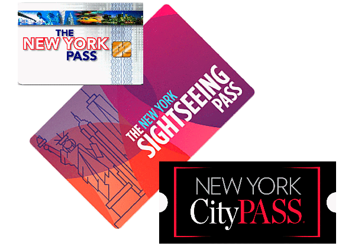

Documentación necesaria
Para entrar en Estados Unidos con una estancia inferior a 90 días, los ciudadanos españoles no requieren visado.
Tan sólo deben tener un pasaporte de lectura mecánica (se emite en España desde el 25 de julio de 2003).
Desde el 12 de enero de 2009, es necesario rellenar el siguiente formulario online con una antelación mínima de
72 horas antes de llegar a Estados Unidos. El formulario debe ser rellenado para todas las personas que viajen,
incluidos niños.
Formulario de entrada a Estados Unidos
Información adicional
Si tenéis dudas, podéis consultar la web oficial de viajes a Estados Unidos.
Web oficial
Tarjetas turísticas

New York Sightseeing Pass
Es una tarjeta turística en forma de código QR (puedes mostrarlo en el móvil o
imprimirlo en papel) que te ofrece entrada gratis a las atracciones y tours de
Nueva York que elijas entre una lista de más de 100 y según la modalidad de pase
que escojas, podrás ahorrar hasta un 70 % respecto a lo que te costaría pagar cada entrada por separado.
Si entras en la webverás que hay más modalidades de ésta tarjeta
Diferencia entre la City Pass y la New York Pass
¿Tienes intención de visitar varias atracciones en Nueva York y te gustaría ahorrar?
Hoy compararemos las dos tarjetas turísticas más famosas: New York CityPASS y la New York Pass.
- La New York CityPASS te sirve para visitar 6 atracciones imprescindibles a lo largo de 9 días. Tiene un precio fijo.
- La New York Pass te sirve para visitar más de 90 de atracciones a lo largo de los días que elijas (1, 3, 5, 7 o 10). Cuantos más días, más cara es.
Apps útiles para viajar a Nueva York
¿Ya tienes lista la maleta para viajar a Nueva York? Ahora toca dedicarle un ratito
a nuestro querido móvil: asegurarte de que tienes espacio suficiente para las mil y
una fotos que sacarás, preparar el cargador y el adaptador para devolverlo a la vida
cuando agonice… ¡E instalar unas cuantas apps!
Para moverte por Nueva York
Metro y bus
Una aplicación sencilla pero útil es MyTransit NYC Subway, Bus, Rail
(Android), que, como su nombre indica, contiene los mapa de metro y
bus para que los consultes incluso sin internet (tienes que descargarlos primero).
Si tienes internet, también te sirve para planificar trayectos.
New York Subway MTA Map and Route Planner
es una alternativa similar para iPhone y Android, que también incluye un planificador de trayectos.
Si buscas aún más funcionalidades, Citymapper (Android e iPhone) es una de lasaplicaciones
de transporte más completas, con planificador de trayectos, alertas, rutas en bici…